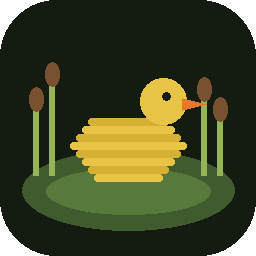
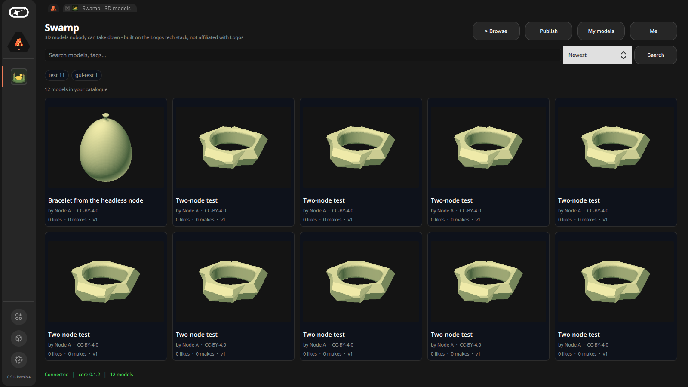
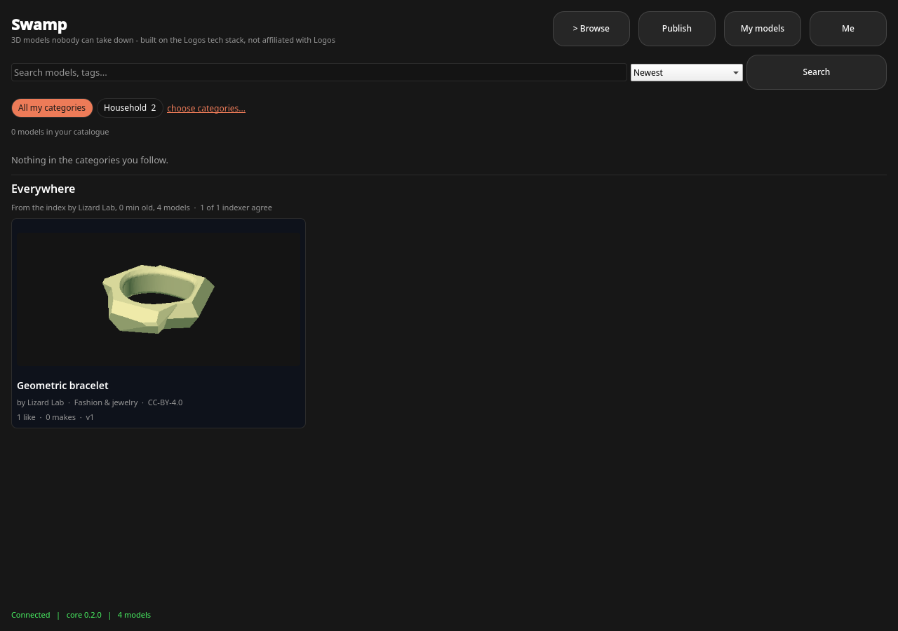
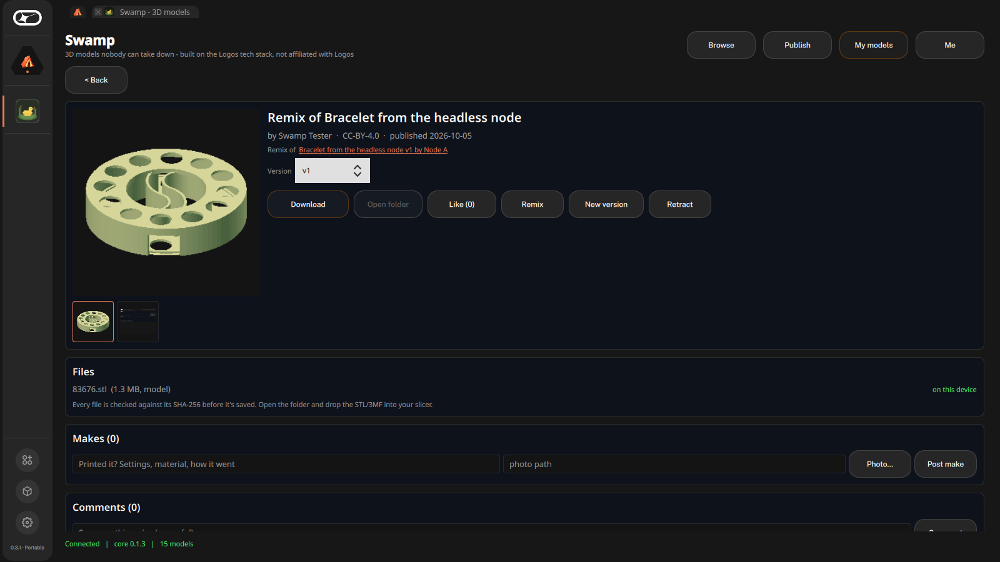
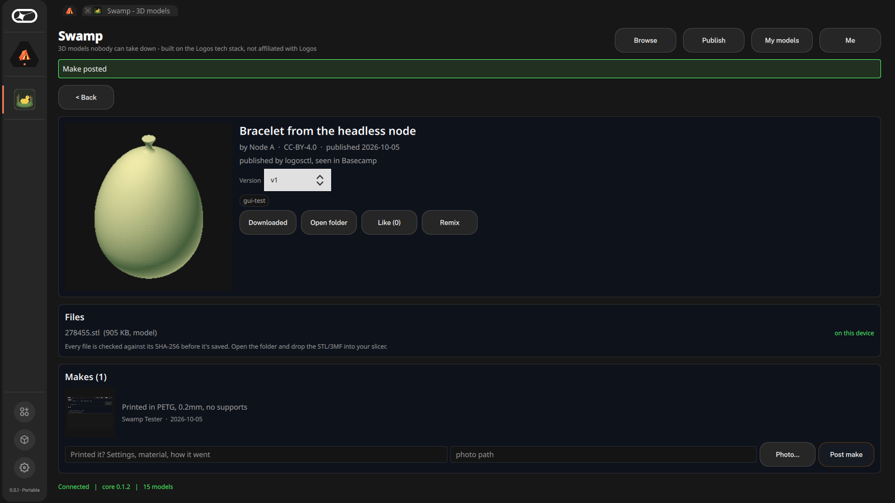
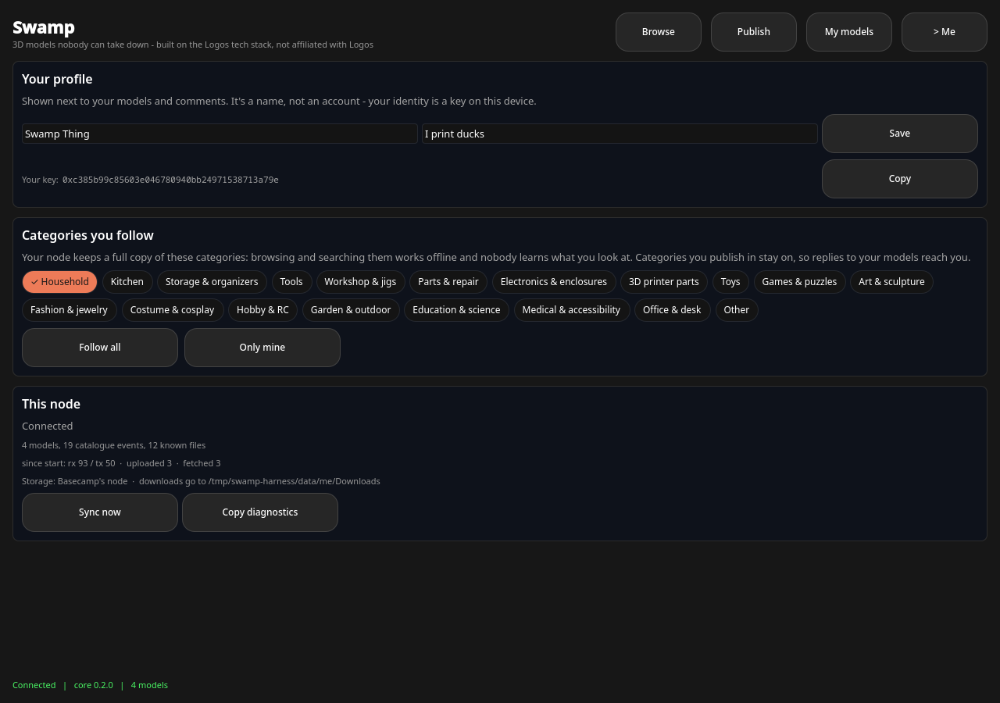
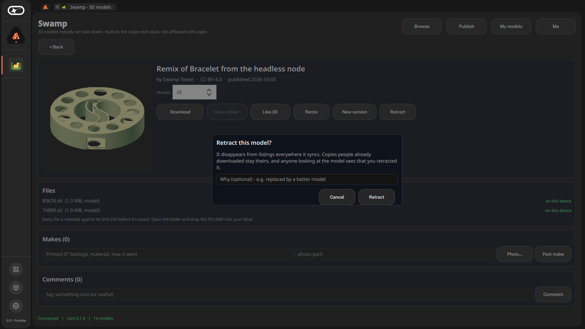

SWAMPSwamp is a peer-to-peer library of printable models. No company in the middle, no accounts, no takedown button, no algorithm deciding what you see. Just people, files and a lot of mud.
Publish a model and it sticks. Search everything without anyone watching what you search for. Find out who really made the thing you're about to print.
Model sites live in towers: one company, one database, one moderation team, one bad quarter away from a paywall. Swamps don't have towers. They're messy, they're everywhere at once, and things that live there are very hard to get rid of.
A desktop app for Logos Basecamp. Under the hood: signed event logs over Logos Messaging, files in Logos Storage, and soon priority proofs anchored on LEZ, the Logos execution zone.
Drop in your STL and photos. Swamp hashes every file, renders a thumbnail and takes a shape fingerprint. The listing goes out at once, and files upload in the background. Versions are immutable: improve it, publish v2.
Your node keeps a full copy of the categories you follow, like Tools, Toys and Gridfinity, and nothing else. Fast, offline and private, and it doesn't need a data centre.
Indexing hubs publish signed, deterministic index snapshots. You fetch only the piece your query needs and rank results yourself. Two honest indexers produce identical bytes, so leaving something out shows.
Anyone can run a hub to keep files alive and answer searches. A hub may refuse content, but it must say what it drops and why. Declared exclusion is a policy, silent omission is provable cheating, and you pick your hubs.
Every version carries a shape fingerprint from day one. Next up: "possible copy of X by Y, published earlier", with evidence your client re-checks itself. Labels inform. They never delete anything.
Remixes credit and link the original (and warn you when its licence says no derivatives). Post your make with a photo. Download is verified byte for byte, then it goes into your slicer.
Real screenshots from Basecamp 0.3.1, synced over the Logos test network. Click to enlarge.






There is no central moderator, and there never will be. That doesn't mean anything goes. It means nobody can decide for everyone.
You do. Your client verifies every signature and ranks everything locally. Hubs choose what they carry and must publish their exclusion lists. Labelers, coming later, are things you subscribe to, not authorities.
It can refuse to carry it, and it has to say so. It can't forge entries, can't edit them and can't rank them for you. If it signs an index that silently drops a model published before that index, the hub has signed the proof of its own cheating, and clients stop trusting it. If every hub colludes, someone starts a new hub: it's one command.
That's the problem we care most about. Exact copies are detected 95-100% of the time in our benchmark; edited copies are still hard and we say so. The plan is evidence-carrying labels plus "who published first" proofs anchored on chain. We can't stop theft, but we can make sure people can find the original.
Swamp is a tool. What you publish, carry or print is your business, under your local laws.
Later. 3D printing happens at a desk; the desktop app comes first and has to be good.
Swamp runs inside Logos Basecamp 0.3, on Linux (x86-64).
HOME=$HOME/swamp-profile ./Basecamp-0.3.1.AppImagehttps://apps.vpavlin.xyz/basecamp/logos-repo.json
swamp://model/... link from someone? Paste it into the search box.Not endorsed by or affiliated with Logos. Swamp is an independent experiment that is built on the Logos tech stack; that is the whole relationship. Nothing here speaks for Logos, and Logos doesn't operate, moderate or vouch for anything in the swamp.